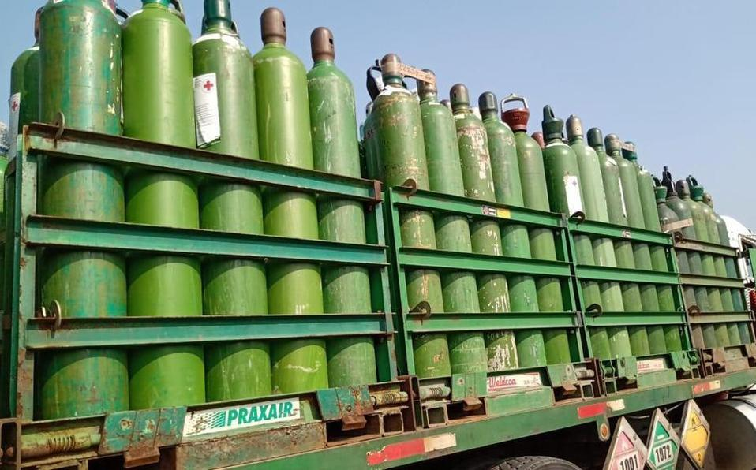
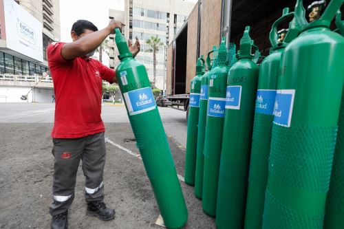

Canales simples para pedidos, consultas y cotizaciones por WhatsApp.
Empresa y operación
Suministro responsable para talleres, empresas e industria
GIA nace para atender la demanda de gases, recargas, equipos e insumos con una atención directa, clara y orientada a la continuidad del trabajo.
Quiénes somos
Un proveedor pensado para operaciones que no pueden detenerse
Atendemos a clientes que necesitan abastecimiento oportuno, comunicación rápida y productos adecuados para trabajo industrial, metalmecánico, mantenimiento y soldadura.
Esta página usa imágenes de referencia mientras se preparan fotografías reales del local, equipo y operación en Arequipa.
Enfoque GIA
Stock, recarga, despacho y asesoría para que el cliente pueda comprar con seguridad.
Enfoque en Arequipa, talleres, empresas, obras y clientes recurrentes.
El negocio requiere seguimiento de entregas, recepciones, canjes y recargas.
Orientación para elegir gases, equipos e insumos según el trabajo.
Operación y respaldo
Una empresa construida alrededor del servicio
La confianza se gana mostrando proceso, orden y capacidad de respuesta.

Abastecimiento de cilindros
Disponibilidad para clientes que requieren continuidad en sus operaciones.

Recarga y control
Proceso orientado a seguridad, orden y trazabilidad del cilindro.

Atención operativa
Trabajo coordinado para responder a pedidos de taller e industria.
Cobertura
Atención para Arequipa y coordinación a provincias
El objetivo es que la web ayude al cliente a contactarse rápido y explique que GIA puede atender pedidos de gases, recargas, equipos e insumos.
Clientes que consumen gases, electrodos, alambres y accesorios de forma recurrente.
Pedidos de mayor volumen que pueden requerir coordinación, factura y despacho.
Personas que necesitan orientación para elegir el gas o equipo adecuado.
Trabajemos juntos
Conversemos sobre el suministro que necesitas
Cuéntanos si buscas gases, recargas, equipos de soldar o insumos para tu operación.